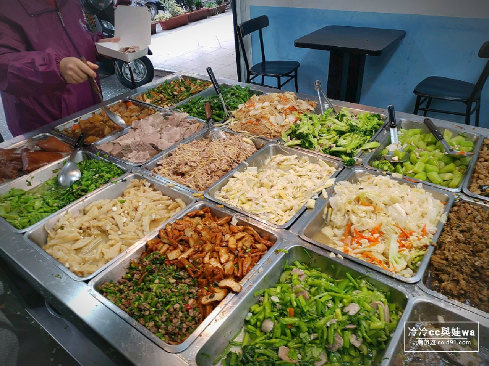

第三頁年輕的老闆夫妻，浸淫在助人的快樂裡。「謝謝，我吃飽了，再見！」男孩起身離開。當男孩拿到沈甸甸的餐盒時，不禁回頭望了老闆夫妻一眼。「要加油喔！明天見！」老闆向男孩揮手致意，話語中透露著，請男孩明天再來店裡用餐。男孩眼中泛起淚光，卻也沒有讓老闆夫妻看見。從此，男孩除了連續假日以外，幾乎每天黃昏都會來，同樣在店裡吃一碗白飯，再外帶一碗走，當然，帶走的那一碗白飯底下，每天都藏著不一樣的秘密。直到男孩畢業，往後的二十年裡，這家自助餐店就再也不曾出現過這男孩的身影了。某一天，將近五十歲的自助餐店老闆夫妻，接到市政府強制拆除違章建築店面的通告，面對中年失業，想到生活無依靠，經濟陷入困境，不禁在店裡抱頭痛哭了起來。就在這個時候，一位身穿名牌西裝，像是大公司經理級的人物突然來訪。  上一頁下一頁目錄 |